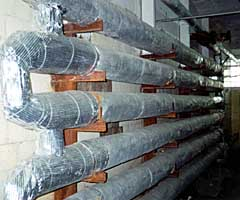

- Продукция
- Фольгоизол СРФ
Фольгоизол СРФ для теплоизоляции труб
Фольгоизол СРФ на основе стеклоткани применяется в качестве защитного слоя для изоляции теплотрасс, трубопроводов, водопроводов городского хозяйства расположенных внутри и вне помещений, а так же для изоляции воздуховодов, котельных, холодильных установок и на промышленных предприятиях различных отраслей, в том числе на предприятиях пищевой промышленности, т.к. не выделяет вредных испарений, что подтверждено санитарно-эпидемиологическим заключением № 77.01.03.577.п.19275.09.4 от 09.09.04
Эксплуатационные качества фольгоизола, такие как долговечность, влагоустойчивость и высокие изолирующие свойства, позволяют использовать фольгоизол СРФ в разных климатических условиях.
Фольгоизол на основе стеклоткани прост в применении, изоляция трубоконструкций производится путем укладки фольгоизола внахлёст 5-7 см на утепляющий слой , а затем крепится монтажной (вязальной) проволокой.
Фольгоизол поставляется в рулонах шириной 1 м и длиной 20 м. Стоимость рулона - 3 800 рублей.
По вопросам приобретения обращайтесь по телефону (495) XXX-XX-XX.